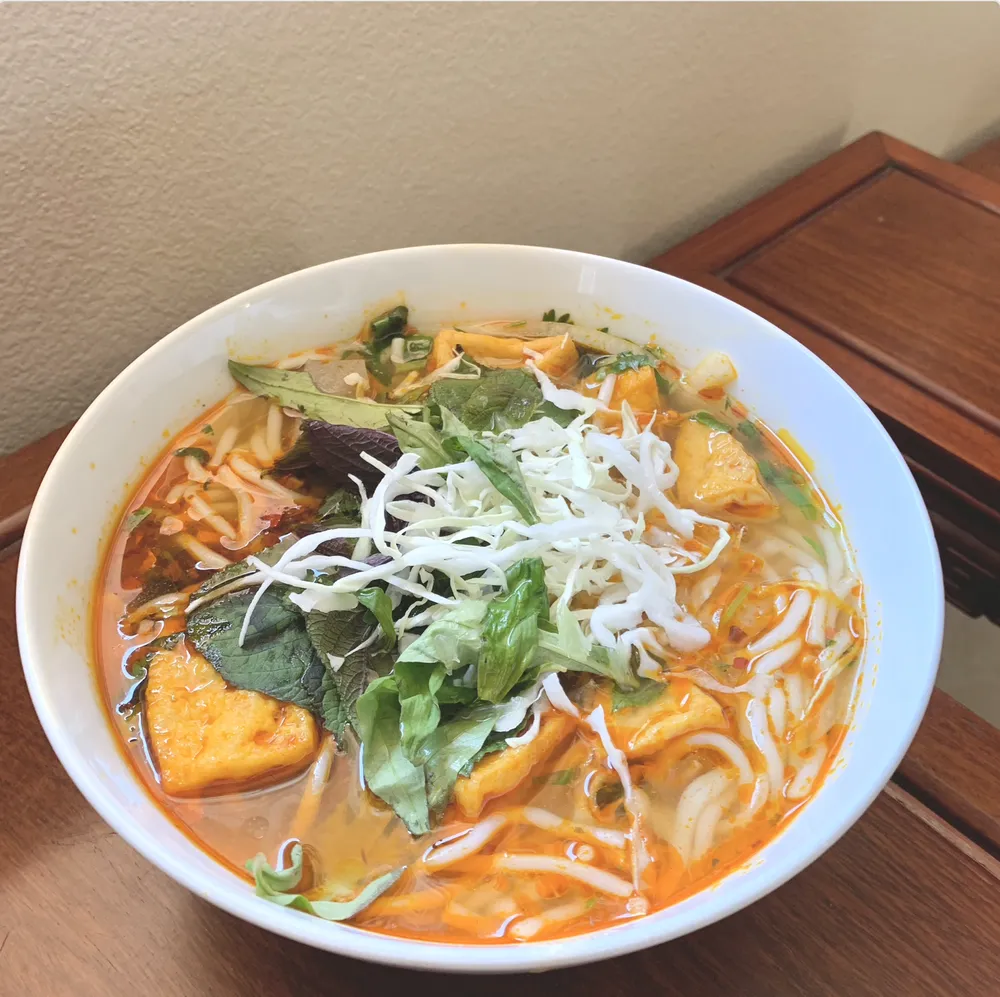
i.
gastronomy
Vegan dishes worth slowing down for: what I cook at home, and the cafés and restaurants I love.
plant-based food & drinks creator
I find, cook and photograph beautiful vegan food and drinks between Orange County and Sài Gòn, and partner with the brands and local spots that belong at the table.
22K+ on Instagram 20 brands featured
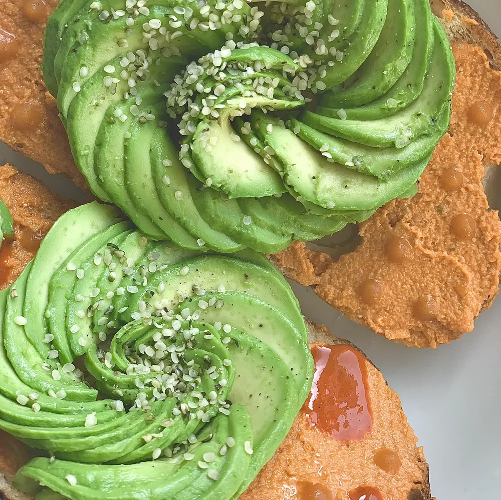
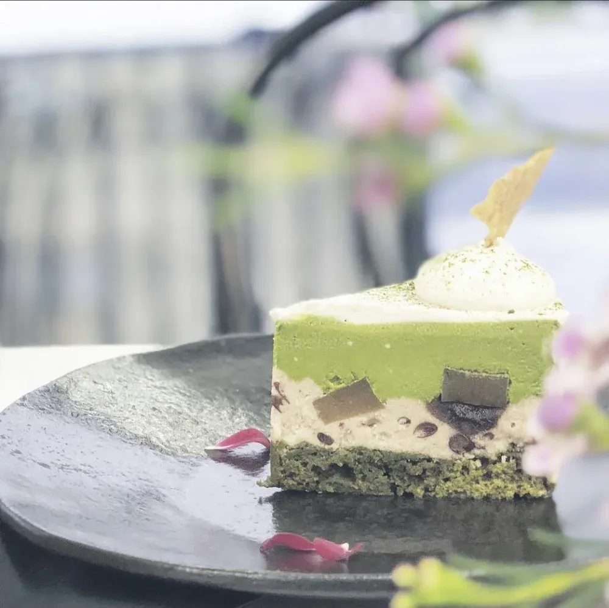
a little joy, served daily
brands I’ve worked with
Past partnerships and gifted collaborations. Listing a brand doesn’t mean we’re working together now.
02 · brand stories
A few of the Instagram stories I’ve made with brands I genuinely use, from the first unboxing to the everyday ritual.

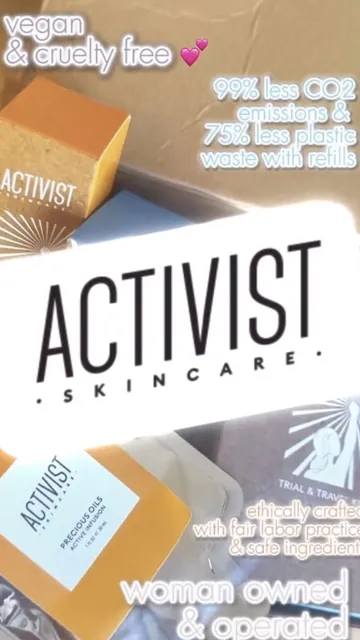
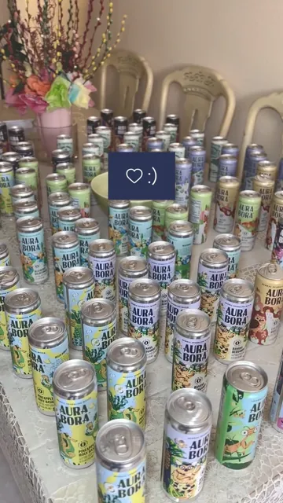
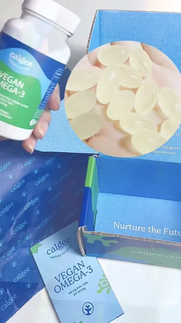


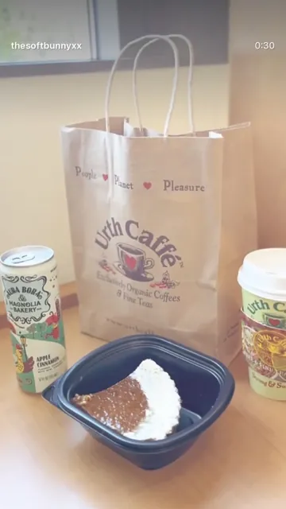
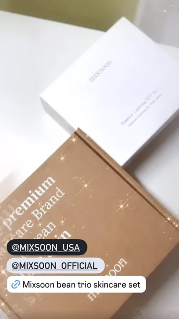
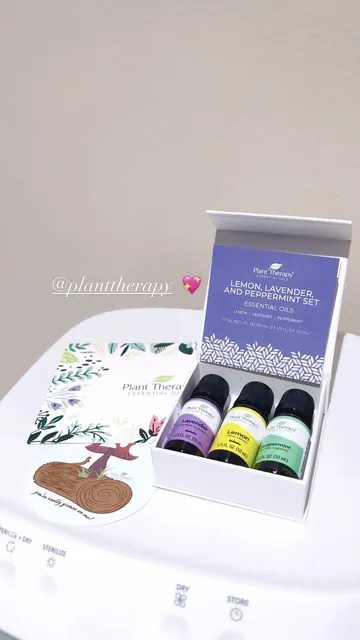
Selected past PR and content work; it doesn’t imply a current partnership.
03 · the kitchen
Cooked, styled and photographed by me, at home and at my favorite tables.
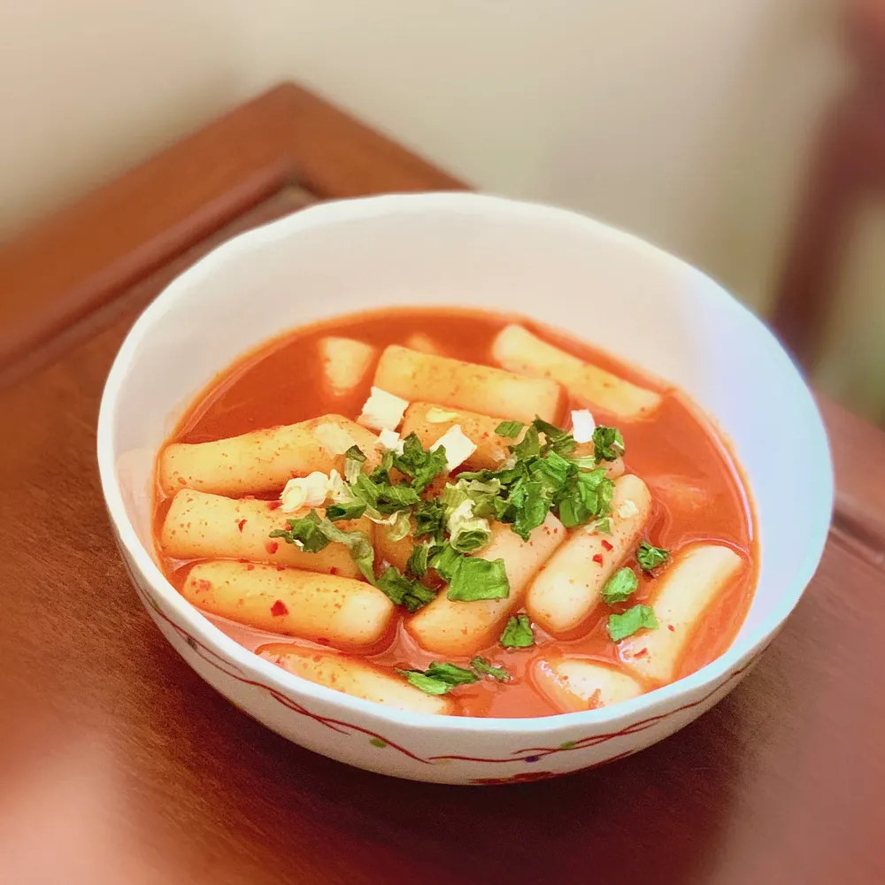
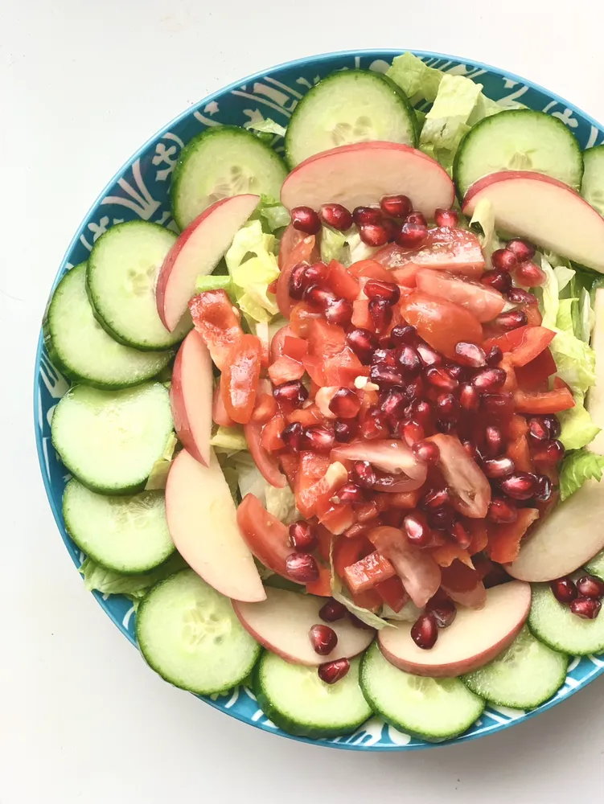
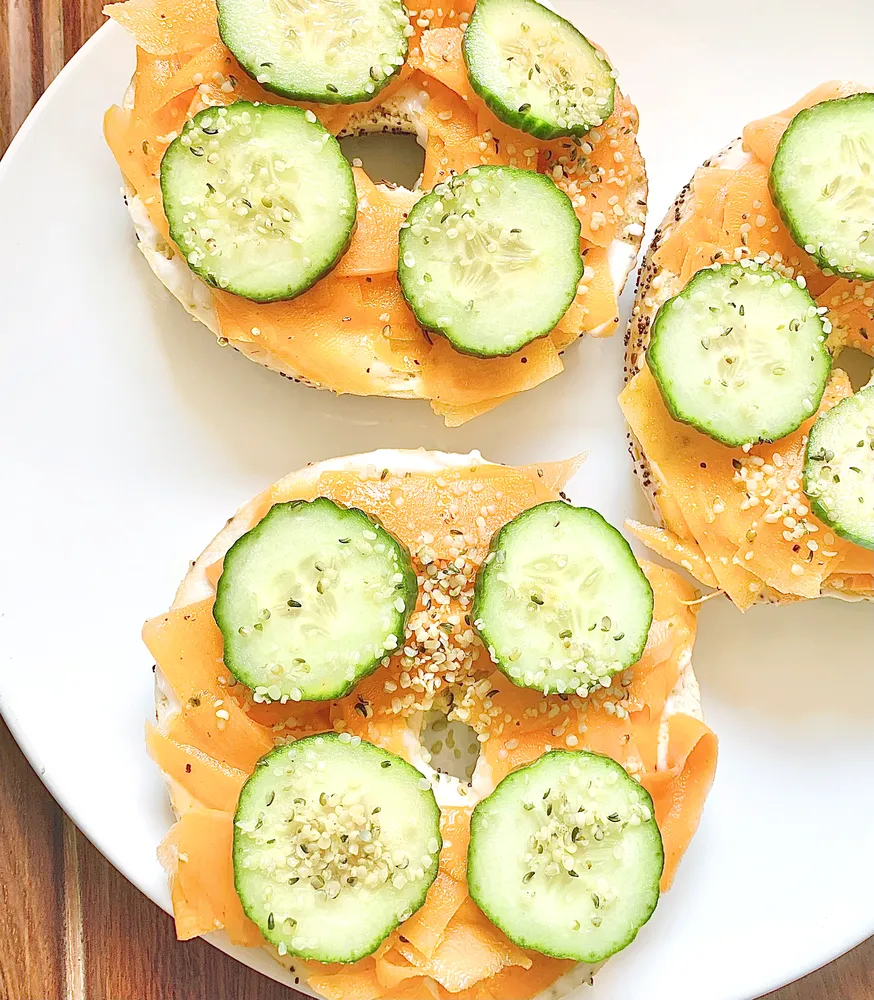
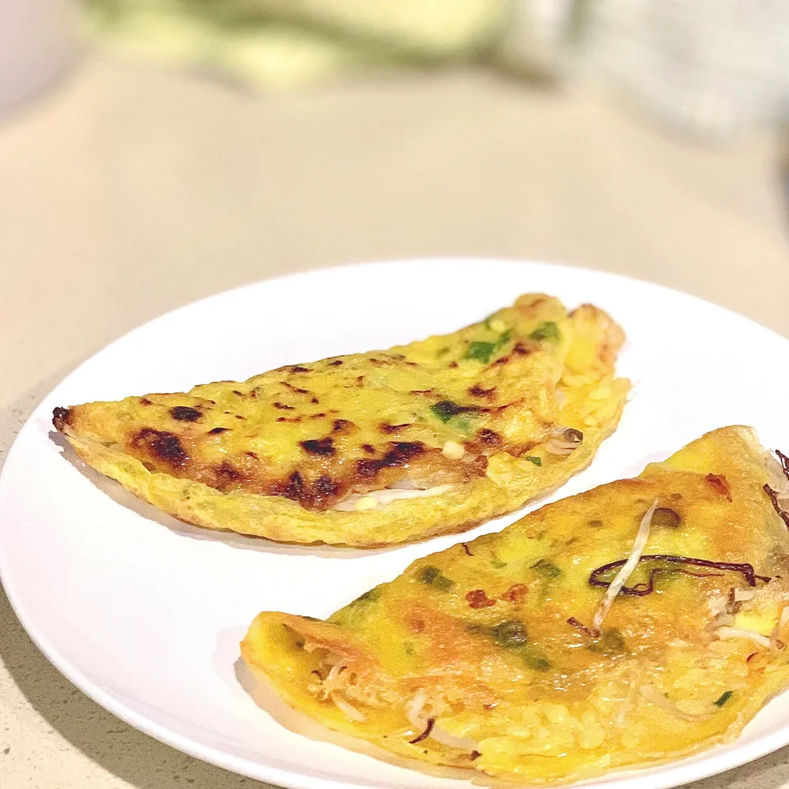
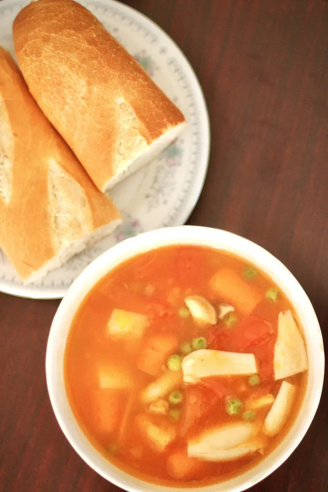
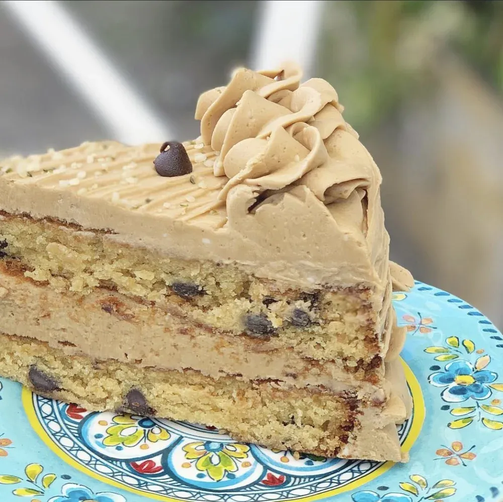
04 · for brands & local spots
Plant-based food and drink, kitchen and home, and vegan beauty and wellness.
Rates and audience details are shared by email, matched to what you have in mind.
the person behind the plates
I’m the creator behind @thesoftbunnyxx. I cook, style and photograph a fully plant-based life between Orange County and Sài Gòn.
I’m drawn to food that feels generous: a familiar bowl, an unexpected ingredient, a beautifully set table. Vegan food can be the most beautiful thing on the table, and I’m here to show it.
follow the everyday moments05 · say hello
For partnerships, include your brand, what you’d like to make, and your timing. I reply from this address only.
Prefer a form? Open the partnership form
season one · ko-fibuy the bunny a coffeeSix plant-based dishes, made beautiful. Every cup goes to ingredients; never expected, always appreciated.